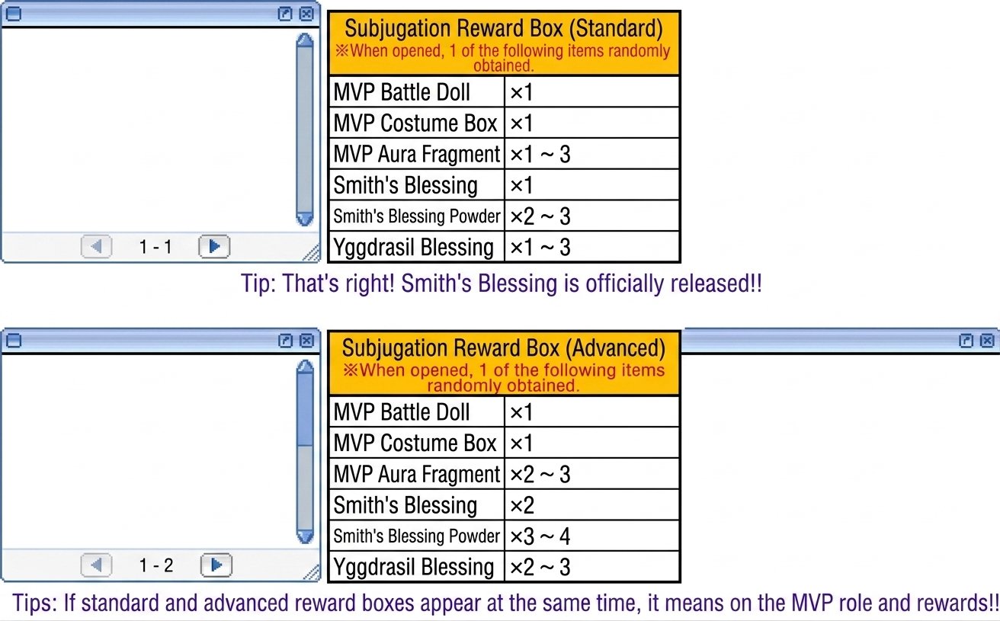
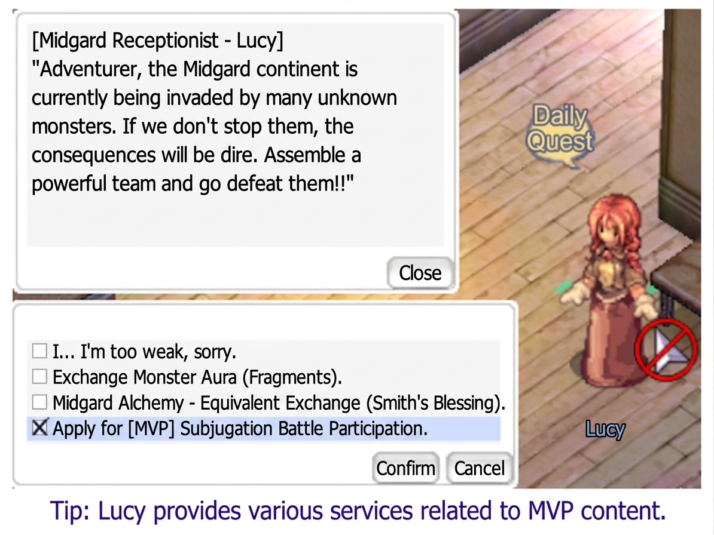
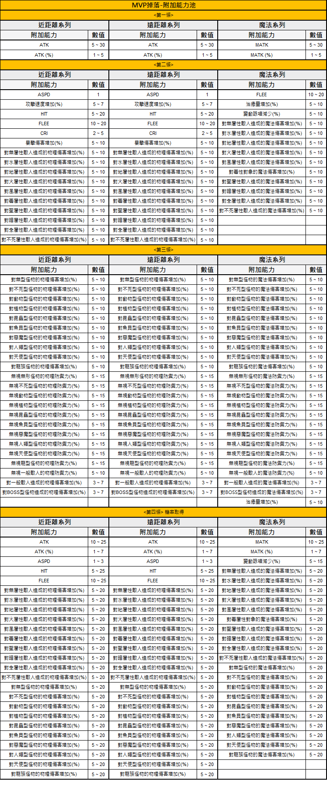
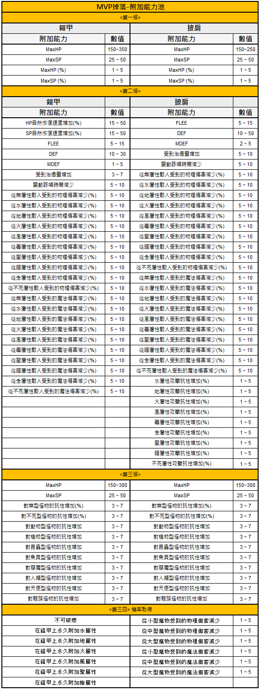

MVP-System: Die "Herrscher der Regionen"
MVPs sind der Schwierigkeits-Gipfel von RO Zero. Dediziertes Lebensraum-System, Quest-Integration über NPC Lucy, und exklusive Waffen- & Rüstungs-Zufalls-Optionen nur für MVP-Drops.
👹 Was sind MVPs?
In RO Zero sind MVPs (地域的統治者) die „Regional-Herrscher" — sie stellen den Endgame-Schwierigkeitsgrad dar und werden mit jedem Patch stärker, um dem Fortschritt der Spieler entgegenzuwirken.
Das MVP-System besteht aus vier verzahnten Teilsystemen:
- Exklusive Lebensraum-Maps
- Exklusive Massaker-Quests via NPC Lucy
- Exklusive Reward-Boxen
- Exklusive Sonder-Systeme: MVP-Kampfpuppen + Waffen-/Rüstungs-Enchants
🗺️ MVP-Lebensraum-Maps
In Zero haben MVPs eigene Habitat-Maps, die in zwei Kategorien unterteilt sind:
🟢 Standard-Habitat (一般棲息地)
Nur MVP-Spawns auf der Map, keine PvP. Geeignet für alle Abenteurer, auch kleine Gruppen / Solo.
Exklusiv-Feature: Keine Todesstrafe in MVP-Habitats — du kannst unbegrenzt Wipes machen und Mechanik lernen.
🟣 PK-Habitat (PK棲息地)
Gleiche MVP-Spawns, aber PvP aktiv. Gilden und Allianzen greifen sich um den Kill. Nur sinnvoll als größere Gruppe.
Reward-Unterschied: Der MVP dropt dort ca. 300× „MVP-Aura-Fragmente" (gegenüber 100 in Standard).

Ein UI-Fenster, das die Auswahl zwischen drei verschiedenen Karten-Typen zeigt, basierend auf der Farbe des Portals.
- Go to Normal Map (Rotes Portal)
- Go to PK Map (Gelbes Portal)
- Go to Origin Map (Weißes Portal)
Der Hinweis unten besagt, dass die Zielkarte anhand der Farbe des Teleportations-Portals bestimmt werden kann.
📜 NPC Lucy: Discharge-Quests
Midgard-Empfangsdame Lucy (米德加爾特接待員-露西)
Position: prt_in 45 102 — Königreich-Gilden-Anwerbung
Services:
- Quest-Annahme: „[MVP] Massaker-Discharge-Qualifikation" — beauftragt dich, einen bestimmten MVP zu besiegen
- Fragment-Tausch: MVP-Aura-Fragmente → Discharge-Reward-Box (Standard)
- Segens-Tausch: Schmied-Segens-Pulver → Schmied-Segen (鐵匠的祝福!)
🎁 Reward-Verteilung pro Kill
🥇 Der MVP-Winner
Der Charakter mit dem „MVP"-Status (größter Damage-Beitrag) darf die „Subjugation Reward Box (Advanced)" aufheben. Beste Rewards.
🥈 Quest-Completer
Wer Lucys Quest abschließt, erhält die „Subjugation Reward Box (Standard)" bei der Rückkehr.
🥉 Alle Anwesenden
Karten-Random-Drops: „MVP Aura Fragments", die jeder auf der Map aufheben kann.
· Normal Habitat: ~100 Drops
· PK Habitat: ~300 Drops

Diese Tabellen zeigen die möglichen zufälligen Belohnungen aus den Standard- und fortgeschrittenen Unterwerfungs-Boxen.
| Gegenstand | Menge |
|---|---|
| MVP Battle Doll | x1 (Standard) / x1 (Advanced) |
| MVP Costume Box | x1 (Standard) / x1 (Advanced) |
| MVP Aura Fragment | x1 ~ 3 (Standard) / x2 ~ 3 (Advanced) |
| Smith's Blessing | x1 (Standard) / x2 (Advanced) |
| Smith's Blessing Powder | x2 ~ 3 (Standard) / x3 ~ 4 (Advanced) |
| Yggdrasil Blessing | x1 ~ 3 (Standard) / x2 ~ 3 (Advanced) |
Die Tabellen listen die zufälligen Beuteinhalte für 'Subjugation Reward Box (Standard)' und 'Subjugation Reward Box (Advanced)' auf.
👤 NPC Lucy in Detail
Die Midgard Receptionist Lucy vergibt Subjugation-Quests und tauscht MVP Aura Fragments oder Blacksmith Blessing Powder. Hier das NPC-UI mit Dialog + Quest-Optionen:

Ein Dialogfenster mit der NPC-Rezeptionistin Lucy, die den Spieler zur Teilnahme an MVP-Unterwerfungsschlachten einlädt.
- I... I'm too weak, sorry.
- Exchange Monster Aura (Fragments).
- Midgard Alchemy - Equivalent Exchange (Blacksmith Blessing).
- Apply for [MVP] Subjugation Battle Participation.
Die Liste zeigt verschiedene Optionen für den Austausch von Gegenständen oder die Anmeldung zu Events. Der Spieler hat die Option 'Apply for [MVP] Subjugation Battle Participation' ausgewählt.
prt_in 45 102
🗡️ MVP-Waffen-Enchants (MVP武器附加能力)
Einige Waffen, die nur von MVPs droppen, haben einen exklusiven Zufalls-Options-Pool (附加能力). Auch wenn dieselbe Waffe regulär droppbar wäre — der MVP-Drop hat einen tieferen Enchant-Pool.
Betroffene Waffen (Stand 17.09.2025)

Insgesamt 67 Zufalls-Options-Einträge über 4 Tiers.
Tier 1 (第一條)
| Melee Ability | Value | Ranged Ability | Value | Magic Ability | Value |
|---|---|---|---|---|---|
| ATK | 5 ~ 30 | ATK | 5 ~ 30 | MATK | 5 ~ 30 |
| ATK (%) | 1 ~ 5 | ATK (%) | 1 ~ 5 | MATK (%) | 1 ~ 5 |
Tier 2 (第二條)
| Melee Ability | Value | Ranged Ability | Value | Magic Ability | Value |
|---|---|---|---|---|---|
| ASPD | 1 | ASPD | 1 | FLEE | 10 ~ 20 |
| Angriffsgeschwindigkeit (%) | 5 ~ 7 | Angriffsgeschwindigkeit (%) | 5 ~ 7 | Heilungsmenge (%) | 5 ~ 10 |
| HIT | 5 ~ 20 | HIT | 5 ~ 20 | Variable Cast Time (%) | 5 ~ 10 |
| FLEE | 10 ~ 20 | FLEE | 10 ~ 20 | Magischer Schaden gegen Neutral (%) | 5 ~ 10 |
| CRI | 2 ~ 5 | CRI | 2 ~ 5 | Magischer Schaden gegen Water (%) | 5 ~ 10 |
| Betäubungsschaden (%) | 5 ~ 10 | Betäubungsschaden (%) | 5 ~ 10 | Magischer Schaden gegen Earth (%) | 5 ~ 10 |
| Phys. Schaden gegen Neutral (%) | 5 ~ 10 | Phys. Schaden gegen Neutral (%) | 5 ~ 10 | Magischer Schaden gegen Fire (%) | 5 ~ 10 |
| Phys. Schaden gegen Water (%) | 5 ~ 10 | Phys. Schaden gegen Water (%) | 5 ~ 10 | Magischer Schaden gegen Wind (%) | 5 ~ 10 |
| Phys. Schaden gegen Earth (%) | 5 ~ 10 | Phys. Schaden gegen Earth (%) | 5 ~ 10 | Magischer Schaden gegen Poison (%) | 5 ~ 10 |
| Phys. Schaden gegen Fire (%) | 5 ~ 10 | Phys. Schaden gegen Fire (%) | 5 ~ 10 | Magischer Schaden gegen Holy (%) | 5 ~ 10 |
| Phys. Schaden gegen Wind (%) | 5 ~ 10 | Phys. Schaden gegen Wind (%) | 5 ~ 10 | Magischer Schaden gegen Shadow (%) | 5 ~ 10 |
| Phys. Schaden gegen Poison (%) | 5 ~ 10 | Phys. Schaden gegen Poison (%) | 5 ~ 10 | Magischer Schaden gegen Ghost (%) | 5 ~ 10 |
| Phys. Schaden gegen Holy (%) | 5 ~ 10 | Phys. Schaden gegen Holy (%) | 5 ~ 10 | Magischer Schaden gegen Undead (%) | 5 ~ 10 |
| Phys. Schaden gegen Shadow (%) | 5 ~ 10 | Phys. Schaden gegen Shadow (%) | 5 ~ 10 | None | None |
| Phys. Schaden gegen Ghost (%) | 5 ~ 10 | Phys. Schaden gegen Ghost (%) | 5 ~ 10 | None | None |
| Phys. Schaden gegen Undead (%) | 5 ~ 10 | Phys. Schaden gegen Undead (%) | 5 ~ 10 | None | None |
Tier 3 (第三條)
| Melee Ability | Value | Ranged Ability | Value | Magic Ability | Value |
|---|---|---|---|---|---|
| Phys. Schaden gegen Formless (%) | 5 ~ 10 | Phys. Schaden gegen Formless (%) | 5 ~ 10 | Magischer Schaden gegen Formless (%) | 5 ~ 10 |
| Phys. Schaden gegen Undead (%) | 5 ~ 10 | Phys. Schaden gegen Undead (%) | 5 ~ 10 | Magischer Schaden gegen Undead (%) | 5 ~ 10 |
| Phys. Schaden gegen Brute (%) | 5 ~ 10 | Phys. Schaden gegen Brute (%) | 5 ~ 10 | Magischer Schaden gegen Brute (%) | 5 ~ 10 |
| Phys. Schaden gegen Plant (%) | 5 ~ 10 | Phys. Schaden gegen Plant (%) | 5 ~ 10 | Magischer Schaden gegen Plant (%) | 5 ~ 10 |
| Phys. Schaden gegen Insect (%) | 5 ~ 10 | Phys. Schaden gegen Insect (%) | 5 ~ 10 | Magischer Schaden gegen Insect (%) | 5 ~ 10 |
| Phys. Schaden gegen Fish (%) | 5 ~ 10 | Phys. Schaden gegen Fish (%) | 5 ~ 10 | Magischer Schaden gegen Fish (%) | 5 ~ 10 |
| Phys. Schaden gegen Demon (%) | 5 ~ 10 | Phys. Schaden gegen Demon (%) | 5 ~ 10 | Magischer Schaden gegen Demon (%) | 5 ~ 10 |
| Phys. Schaden gegen Demi-Human (%) | 5 ~ 10 | Phys. Schaden gegen Demi-Human (%) | 5 ~ 10 | Magischer Schaden gegen Demi-Human (%) | 5 ~ 10 |
| Phys. Schaden gegen Angel (%) | 5 ~ 10 | Phys. Schaden gegen Angel (%) | 5 ~ 10 | Magischer Schaden gegen Angel (%) | 5 ~ 10 |
| Phys. Schaden gegen Dragon (%) | 5 ~ 10 | Phys. Schaden gegen Dragon (%) | 5 ~ 10 | Magischer Schaden gegen Dragon (%) | 5 ~ 10 |
| DEF ignore Formless (%) | 5 ~ 15 | DEF ignore Formless (%) | 5 ~ 15 | MDEF ignore Formless (%) | 5 ~ 15 |
| DEF ignore Undead (%) | 5 ~ 15 | DEF ignore Undead (%) | 5 ~ 15 | MDEF ignore Undead (%) | 5 ~ 15 |
| DEF ignore Brute (%) | 5 ~ 15 | DEF ignore Brute (%) | 5 ~ 15 | MDEF ignore Brute (%) | 5 ~ 15 |
| DEF ignore Plant (%) | 5 ~ 15 | DEF ignore Plant (%) | 5 ~ 15 | MDEF ignore Plant (%) | 5 ~ 15 |
| DEF ignore Insect (%) | 5 ~ 15 | DEF ignore Insect (%) | 5 ~ 15 | MDEF ignore Insect (%) | 5 ~ 15 |
| DEF ignore Fish (%) | 5 ~ 15 | DEF ignore Fish (%) | 5 ~ 15 | MDEF ignore Fish (%) | 5 ~ 15 |
| DEF ignore Demon (%) | 5 ~ 15 | DEF ignore Demon (%) | 5 ~ 15 | MDEF ignore Demon (%) | 5 ~ 15 |
| DEF ignore Demi-Human (%) | 5 ~ 15 | DEF ignore Demi-Human (%) | 5 ~ 15 | MDEF ignore Demi-Human (%) | 5 ~ 15 |
| DEF ignore Angel (%) | 5 ~ 15 | DEF ignore Angel (%) | 5 ~ 15 | MDEF ignore Angel (%) | 5 ~ 15 |
| DEF ignore Dragon (%) | 5 ~ 15 | DEF ignore Dragon (%) | 5 ~ 15 | MDEF ignore Dragon (%) | 5 ~ 15 |
| DEF ignore Normal Mob (%) | 5 ~ 10 | DEF ignore Normal Mob (%) | 5 ~ 10 | MDEF ignore Normal Mob (%) | 5 ~ 10 |
| Phys. Schaden gegen Normal Mob (%) | 3 ~ 7 | Phys. Schaden gegen Normal Mob (%) | 3 ~ 7 | Magischer Schaden gegen Normal Mob (%) | 3 ~ 7 |
| Phys. Schaden gegen Boss Mob (%) | 3 ~ 7 | Phys. Schaden gegen Boss Mob (%) | 3 ~ 7 | Magischer Schaden gegen Boss Mob (%) | 3 ~ 7 |
| None | None | None | None | Heilungsmenge (%) | 5 ~ 10 |
Tier 4 (第四條)
| Melee Ability | Value | Ranged Ability | Value | Magic Ability | Value |
|---|---|---|---|---|---|
| ATK | 10 ~ 25 | ATK | 10 ~ 25 | MATK | 10 ~ 25 |
| ATK (%) | 1 ~ 7 | ATK (%) | 1 ~ 7 | MATK (%) | 1 ~ 7 |
| ASPD | 1 ~ 3 | ASPD | 1 ~ 3 | Variable Cast Time (%) | 5 ~ 15 |
| HIT | 5 ~ 25 | HIT | 5 ~ 25 | Magischer Schaden gegen Neutral (%) | 5 ~ 20 |
| FLEE | 10 ~ 25 | FLEE | 10 ~ 25 | Magischer Schaden gegen Water (%) | 5 ~ 20 |
| Phys. Schaden gegen Neutral (%) | 5 ~ 20 | Phys. Schaden gegen Neutral (%) | 5 ~ 20 | Magischer Schaden gegen Earth (%) | 5 ~ 20 |
| Phys. Schaden gegen Water (%) | 5 ~ 20 | Phys. Schaden gegen Water (%) | 5 ~ 20 | Magischer Schaden gegen Fire (%) | 5 ~ 20 |
| Phys. Schaden gegen Earth (%) | 5 ~ 20 | Phys. Schaden gegen Earth (%) | 5 ~ 20 | Magischer Schaden gegen Wind (%) | 5 ~ 20 |
| Phys. Schaden gegen Fire (%) | 5 ~ 20 | Phys. Schaden gegen Fire (%) | 5 ~ 20 | Magischer Schaden gegen Poison (%) | 5 ~ 20 |
| Phys. Schaden gegen Wind (%) | 5 ~ 20 | Phys. Schaden gegen Wind (%) | 5 ~ 20 | Magischer Schaden gegen Holy (%) | 5 ~ 20 |
| Phys. Schaden gegen Poison (%) | 5 ~ 20 | Phys. Schaden gegen Poison (%) | 5 ~ 20 | Magischer Schaden gegen Shadow (%) | 5 ~ 20 |
| Phys. Schaden gegen Holy (%) | 5 ~ 20 | Phys. Schaden gegen Holy (%) | 5 ~ 20 | Magischer Schaden gegen Ghost (%) | 5 ~ 20 |
| Phys. Schaden gegen Shadow (%) | 5 ~ 20 | Phys. Schaden gegen Shadow (%) | 5 ~ 20 | Magischer Schaden gegen Undead (%) | 5 ~ 20 |
| Phys. Schaden gegen Ghost (%) | 5 ~ 20 | Phys. Schaden gegen Ghost (%) | 5 ~ 20 | Magischer Schaden gegen Formless (%) | 5 ~ 20 |
| Phys. Schaden gegen Undead (%) | 5 ~ 20 | Phys. Schaden gegen Undead (%) | 5 ~ 20 | Magischer Schaden gegen Undead (%) | 5 ~ 20 |
| Phys. Schaden gegen Formless (%) | 5 ~ 20 | Phys. Schaden gegen Formless (%) | 5 ~ 20 | Magischer Schaden gegen Brute (%) | 5 ~ 20 |
| Phys. Schaden gegen Undead (%) | 5 ~ 20 | Phys. Schaden gegen Undead (%) | 5 ~ 20 | Magischer Schaden gegen Plant (%) | 5 ~ 20 |
| Phys. Schaden gegen Brute (%) | 5 ~ 20 | Phys. Schaden gegen Brute (%) | 5 ~ 20 | Magischer Schaden gegen Insect (%) | 5 ~ 20 |
| Phys. Schaden gegen Plant (%) | 5 ~ 20 | Phys. Schaden gegen Plant (%) | 5 ~ 20 | Magischer Schaden gegen Fish (%) | 5 ~ 20 |
| Phys. Schaden gegen Insect (%) | 5 ~ 20 | Phys. Schaden gegen Insect (%) | 5 ~ 20 | Magischer Schaden gegen Demon (%) | 5 ~ 20 |
| Phys. Schaden gegen Fish (%) | 5 ~ 20 | Phys. Schaden gegen Fish (%) | 5 ~ 20 | Magischer Schaden gegen Demi-Human (%) | 5 ~ 20 |
| Phys. Schaden gegen Demon (%) | 5 ~ 20 | Phys. Schaden gegen Demon (%) | 5 ~ 20 | Magischer Schaden gegen Angel (%) | 5 ~ 20 |
| Phys. Schaden gegen Demi-Human (%) | 5 ~ 20 | Phys. Schaden gegen Demi-Human (%) | 5 ~ 20 | Magischer Schaden gegen Dragon (%) | 5 ~ 20 |
| Phys. Schaden gegen Angel (%) | 5 ~ 20 | Phys. Schaden gegen Angel (%) | 5 ~ 20 | None | None |
| Phys. Schaden gegen Dragon (%) | 5 ~ 20 | Phys. Schaden gegen Dragon (%) | 5 ~ 20 | None | None |
🛡️ MVP-Rüstungs-Enchants (MVP防具附加能力)
Seit dem Patch 06.11.2025 gibt es den MVP-Enchant-Pool auch für Rüstungen.
Betroffene Rüstungen

Insgesamt 57 Zufalls-Options-Einträge über 4 Tiers.
Tier 1 (第一條)
| 鎧甲 (Armor) | Wert | 披肩 (Garment) | Wert |
|---|---|---|---|
| MaxHP | 150~350 | MaxHP | 150~250 |
| MaxSP | 25~50 | MaxSP | 25~50 |
| MaxHP (%) | 1~5 | MaxHP (%) | 1~5 |
| MaxSP (%) | 1~5 | MaxSP (%) | 1~5 |
Tier 2 (第二條)
| 鎧甲 (Armor) | Wert | 披肩 (Garment) | Wert |
|---|---|---|---|
| HP-Regenerationsrate (%) | 15~50 | FLEE | 5~15 |
| SP-Regenerationsrate (%) | 15~50 | DEF | 10~50 |
| FLEE | 5~15 | MDEF | 2~5 |
| DEF | 10~30 | Heileffekt | 5~10 |
| MDEF | 1~5 | Variable Zauberzeit | 5~10 |
| Heileffekt | 3~7 | Reduzierter physischer Schaden von Neutral-Gegnern (%) | 5~10 |
| Variable Zauberzeit | 5~10 | Reduzierter physischer Schaden von Water-Gegnern (%) | 5~10 |
| Reduzierter physischer Schaden von Neutral-Gegnern (%) | 5~10 | Reduzierter physischer Schaden von Earth-Gegnern (%) | 5~10 |
| Reduzierter physischer Schaden von Water-Gegnern (%) | 5~10 | Reduzierter physischer Schaden von Fire-Gegnern (%) | 5~10 |
| Reduzierter physischer Schaden von Earth-Gegnern (%) | 5~10 | Reduzierter physischer Schaden von Wind-Gegnern (%) | 5~10 |
| Reduzierter physischer Schaden von Fire-Gegnern (%) | 5~10 | Reduzierter physischer Schaden von Poison-Gegnern (%) | 5~10 |
| Reduzierter physischer Schaden von Wind-Gegnern (%) | 5~10 | Reduzierter physischer Schaden von Holy-Gegnern (%) | 5~10 |
| Reduzierter physischer Schaden von Poison-Gegnern (%) | 5~10 | Reduzierter physischer Schaden von Shadow-Gegnern (%) | 5~10 |
| Reduzierter physischer Schaden von Holy-Gegnern (%) | 5~10 | Reduzierter physischer Schaden von Ghost-Gegnern (%) | 5~10 |
| Reduzierter physischer Schaden von Shadow-Gegnern (%) | 5~10 | Reduzierter physischer Schaden von Undead-Gegnern (%) | 5~10 |
| Reduzierter physischer Schaden von Ghost-Gegnern (%) | 5~10 | Reduzierter magischer Schaden von Neutral-Gegnern (%) | 5~10 |
| Reduzierter physischer Schaden von Undead-Gegnern (%) | 5~10 | Reduzierter magischer Schaden von Water-Gegnern (%) | 5~10 |
| Reduzierter magischer Schaden von Neutral-Gegnern (%) | 5~10 | Reduzierter magischer Schaden von Earth-Gegnern (%) | 5~10 |
| Reduzierter magischer Schaden von Water-Gegnern (%) | 5~10 | Reduzierter magischer Schaden von Fire-Gegnern (%) | 5~10 |
| Reduzierter magischer Schaden von Earth-Gegnern (%) | 5~10 | Reduzierter magischer Schaden von Wind-Gegnern (%) | 5~10 |
| Reduzierter magischer Schaden von Fire-Gegnern (%) | 5~10 | Reduzierter magischer Schaden von Poison-Gegnern (%) | 5~10 |
| Reduzierter magischer Schaden von Wind-Gegnern (%) | 5~10 | Reduzierter magischer Schaden von Holy-Gegnern (%) | 5~10 |
| Reduzierter magischer Schaden von Poison-Gegnern (%) | 5~10 | Reduzierter magischer Schaden von Shadow-Gegnern (%) | 5~10 |
| Reduzierter magischer Schaden von Holy-Gegnern (%) | 5~10 | Reduzierter magischer Schaden von Ghost-Gegnern (%) | 5~10 |
| Reduzierter magischer Schaden von Shadow-Gegnern (%) | 5~10 | Reduzierter magischer Schaden von Undead-Gegnern (%) | 5~10 |
| Reduzierter magischer Schaden von Ghost-Gegnern (%) | 5~10 | Water-Resistenz (%) | 1~5 |
| Reduzierter magischer Schaden von Undead-Gegnern (%) | 5~10 | Earth-Resistenz (%) | 1~5 |
| - | - | Fire-Resistenz (%) | 1~5 |
| - | - | Wind-Resistenz (%) | 1~5 |
| - | - | Poison-Resistenz (%) | 1~5 |
| - | - | Ghost-Resistenz (%) | 1~5 |
| - | - | Holy-Resistenz (%) | 1~5 |
| - | - | Shadow-Resistenz (%) | 1~5 |
| - | - | Undead-Resistenz (%) | 1~5 |
Tier 3 (第三條)
| 鎧甲 (Armor) | Wert | 披肩 (Garment) | Wert |
|---|---|---|---|
| MaxHP | 150~300 | MaxHP | 150~300 |
| MaxSP | 25~50 | MaxSP | 25~50 |
| Formless-Resistenz (%) | 3~7 | Formless-Resistenz (%) | 3~7 |
| Undead-Resistenz (%) | 3~7 | Undead-Resistenz (%) | 3~7 |
| Brute-Resistenz (%) | 3~7 | Brute-Resistenz (%) | 3~7 |
| Plant-Resistenz (%) | 3~7 | Plant-Resistenz (%) | 3~7 |
| Insect-Resistenz (%) | 3~7 | Insect-Resistenz (%) | 3~7 |
| Fish-Resistenz (%) | 3~7 | Fish-Resistenz (%) | 3~7 |
| Demon-Resistenz (%) | 3~7 | Demon-Resistenz (%) | 3~7 |
| Demi-Human-Resistenz (%) | 3~7 | Demi-Human-Resistenz (%) | 3~7 |
| Angel-Resistenz (%) | 3~7 | Angel-Resistenz (%) | 3~7 |
| Dragon-Resistenz (%) | 3~7 | Dragon-Resistenz (%) | 3~7 |
Tier 4 (第三四 / 第四條)
| 鎧甲 (Armor) | 披肩 (Garment) | Wert |
|---|---|---|
| Unzerstörbar | Reduzierter physischer Schaden von Small-Gegnern | 1~5 |
| Rüstung dauerhaft mit Water-Attribut belegen | Reduzierter physischer Schaden von Medium-Gegnern | 1~5 |
| Rüstung dauerhaft mit Earth-Attribut belegen | Reduzierter physischer Schaden von Large-Gegnern | 1~5 |
| Rüstung dauerhaft with Fire-Attribut belegen | Reduzierter magischer Schaden von Small-Gegnern | 1~5 |
| Rüstung dauerhaft mit Wind-Attribut belegen | Reduzierter magischer Schaden von Medium-Gegnern | 1~5 |
| Rüstung dauerhaft mit Holy-Attribut belegen | Reduzierter magischer Schaden von Large-Gegnern | 1~5 |
| Rüstung dauerhaft mit Shadow-Attribut belegen | None | None |
💎 Sonder-Drops bei MVP-Tod
- MVP-Aura-Fragmente: Spezial-Trigger-Drop, zufällig auf der gesamten Habitat-Map verstreut (s.o.)
- MVP-Kampfpuppe: Chance auf eine MVP-Puppe (siehe Kampfpuppen-System)
- Schmied-Segens-Pulver: Aus Reward-Boxen, gegen Schmied-Segen bei Lucy tauschbar
💡 Strategie-Empfehlungen
🎯 Solo / Small Group
Standard-Habitat bevorzugen — keine Todesstrafe = perfekt zum Mechanik-Lernen. Bei Progress: Lucy-Quest einreichen für garantierte Reward-Box.
👥 Gilden-Push
PK-Habitat nur wenn 8–12+ organisierte Spieler. Aura-Fragmente-Mass-Farm lohnt sich bei Kontrolle über Map.
⚔️ Schmied-Segen sammeln
Segens-Pulver aus Boxen hamstern → Schmied-Segen tauschen → auf Top-Weapon/Armor upgraden (senkt Fail-Risiko beim Refinen). Siehe Aktivierungs-System.